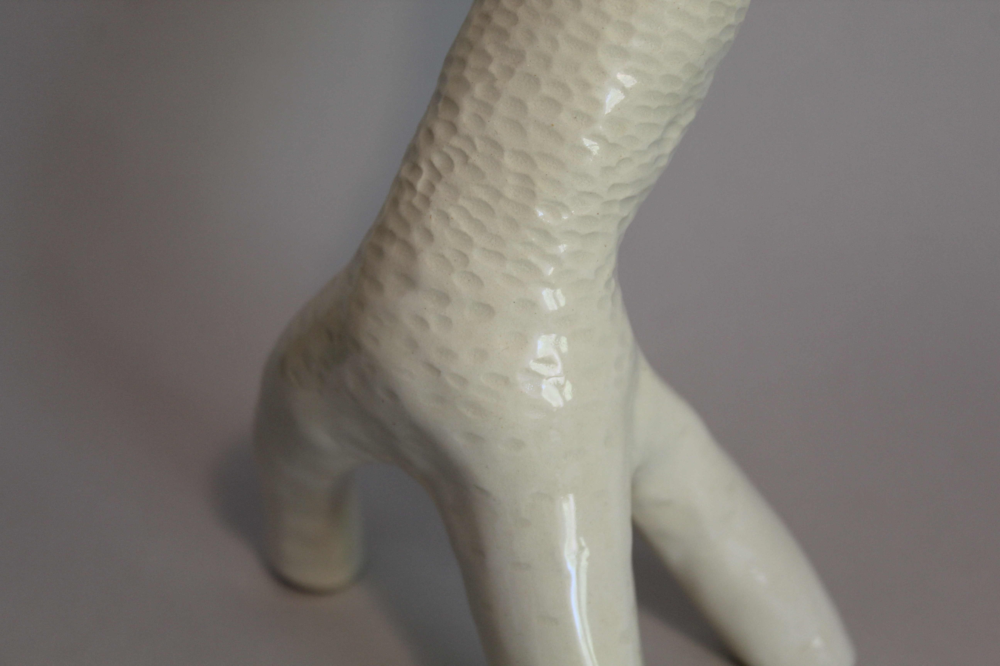
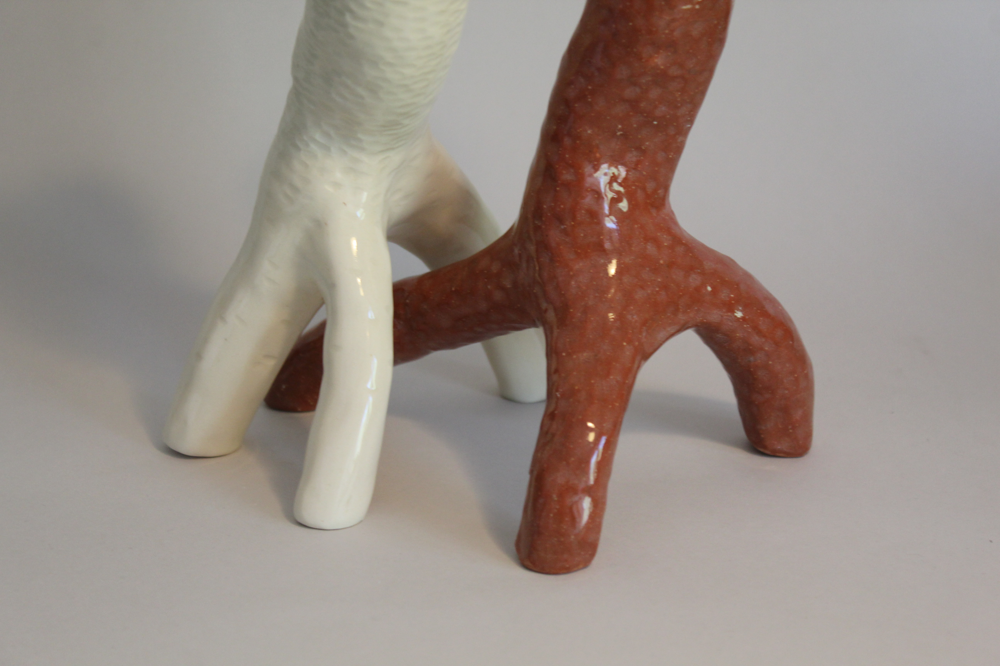

← Volver a proyectos

Candela Haustorial
Cerámica · 2025Realicé este par de candelabros de cerámica en el ramo Cerámica: Expresión y Funcionalidad, donde desarrollé una propuesta utilizando la técnica de ahuecado en cerámica gres. El nombre surge del haustorio, estructura con la que una planta parásita se adhiere a otra para alimentarse, representando un gesto de codependencia entre ambas piezas.

